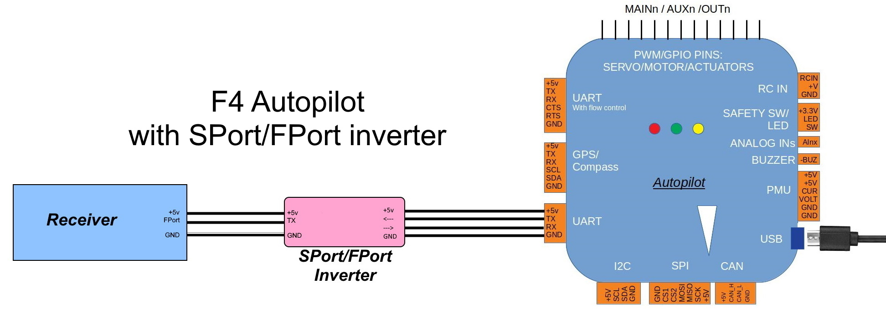
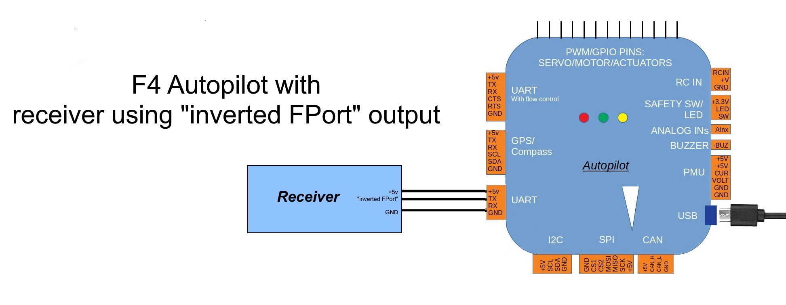
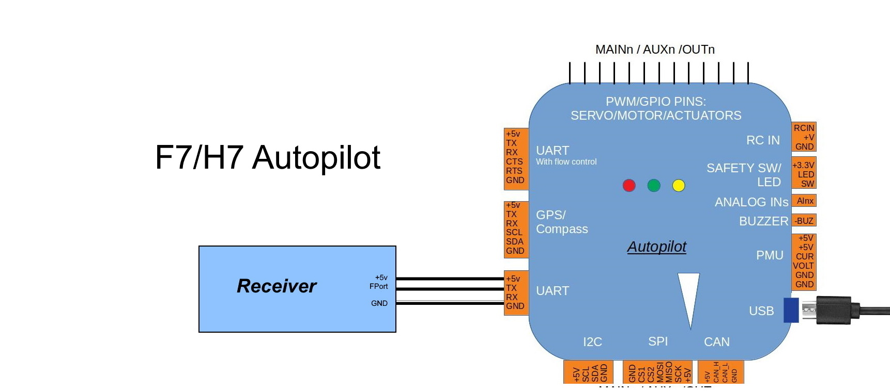
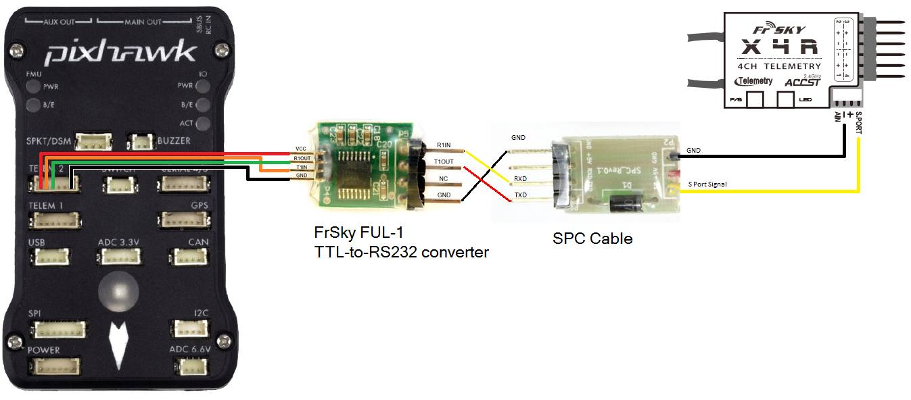

[copywiki destination=”plane,copter,rover,blimp”]¶
Connecting to FrSky Sport and FPort¶
Some FrSky receivers have the ability to relay telemetry data from the vehicle to the transmitter.
This was done initially via their SPort capability. And later, via an additional new protocol called FPort which also includes the RC data to the autopilot.
In order to connect to these ports on the FrSky receiver, any UART on the autopilot (normally a “TELEM” port) is used. However, both SPort and FPort are bi-directional protocols and require signal inversion in both directions in order to interface to the autopilot’s UART.
Note
if Sport is being used to send telemetry, then RC data must still be sent to the autopilot via its RCin pin as PPM or SBus from the FrSky receiver. See Typical Autopilot Wiring Connections.
If the autopilot uses an F7 or H7 processor, then this can be done by appropriately configuring the UART port on the autopilot. However, most F4 based autopilots do not have this capability and required inverters externally. A few F4 autopilots have these on the boards themselves and label the port “FrSky Telem”, but most do not. Those require an added bi-directional inverter connected between the autopilot and the receiver’s SPort or FPort.
Note
F4 autopilots with on-board inversion (Pixracer,MindPX V2) default to having the inversion on their ports designated for FRsky telem, only requiring that the TX and RX pins be tied together and connected to the Sport/Fport on the receiver and the appropriate SERIALx_PROTOCOL be set for that port.
In addition, some FrSky receivers provide an optional pad with the SPort or FPort already “inverted”, so no external inversion is required if that is used.
Note
The various connection configurations are shown below (FPort is used in the diagrams, but just substitute SPort for the FPort labels in the images when using SPort connections):
Connections¶
{kind=link}
Fport:
SERIALx_PROTOCOL= 23Sport:
SERIALx_PROTOCOL= 10

{kind=link}
Fport:
SERIALx_PROTOCOL= 23,SERIALx_OPTIONS= 4 (Half Duplex)Sport:
SERIALx_PROTOCOL= 10,SERIALx_OPTIONS= 4 (Half Duplex)
Note
modifying the receiver to access the “un-inverted” signal may not have enough drive, and/or, require the setting of the UART TX pin’s pull-up resistor. Try using SERIALx_OPTIONS = 132 in that case.
Warning
getting an “un-inverted” SPort or FPort signal from some receivers by tapping an internal connection may not provide enough drive for reliable operation on some autopilots having protection resistors in series with their UART pins, even when enabling the pull-up resistor on the UART. Contact the autopilot OEM for possible workarounds or use an normal FPort signal and external bi-directional inverter as shown above.

{kind=link}
Fport:
SERIALx_PROTOCOL= 23,SERIALx_OPTIONS= 7Sport:
SERIALx_PROTOCOL= 10,SERIALx_OPTIONS= 7 (invert TX/RX, Half Duplex)
Note
F7/H7 boards can have the FPort connected to the UARTs RX pin, instead of the TX pin as shown above, and use the UART’s SWAP option. F4 boards do not have this SWAP capability See [copywiki destination=”plane,copter,rover,blimp”] for more information.
Note
some autopilots, like the Cube Orange autopilot, have level shifters on their UART pins used on their Telemetry ports. This requires a 10K pulldown resistor externally on the receiver’s SPort signal to work properly.
Bi-Directional Inverter cables¶
Craft and Theory Pixhawk to FrSky Telemetry Cables¶
Craft and Theory supplies cost-effective all-in-one X-receiver cables with connectors for the various FrSky receivers.
Yaapu Telemetry Cable¶
On Amazon
DIY cable for SmartPort¶
You can make your own cable using the following components (Frsky no longer produces, but still is available from some E-Bay sellers):
{kind=link}
TTL-to-RS232 converter such as the FrSky FUL-1
DF13 6 position connector which will be cut and soldered to the TTL-to-RS232 converter
Molex Picoblade 4 position telemetry wire which will be cut and soldered to the TTL-to-RS232 converter (should be included with the receiver)
Or a more compact version using the following components:
-MAX3232 RS-232 to TTL converter breakout board
-Any silicon diode
{kind=link}
Warning
DO NOT PLUG THE TELEMETRY CABLE TO THE AUTOPILOT OR RECIEVER WHILE POWER IS ON!